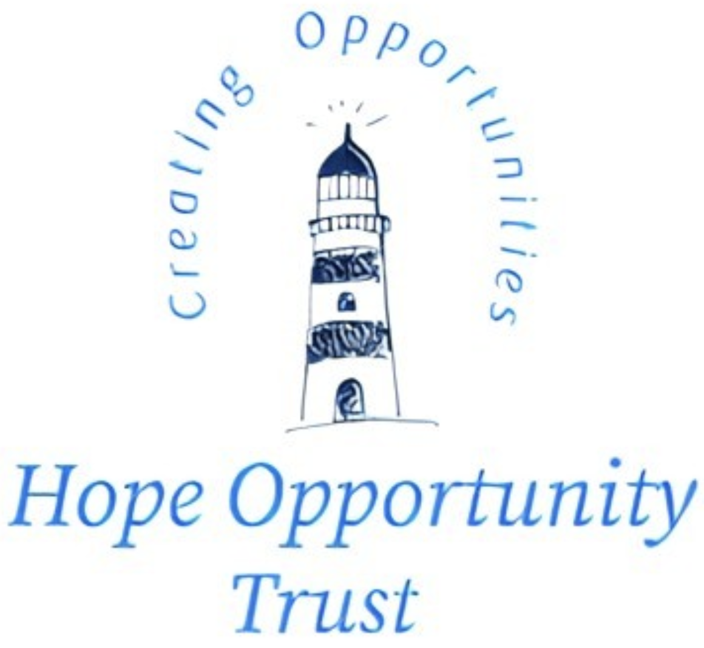

HOT is a Charitable Incorporated Organisation whose mission is to change lives and transform the opportunities
available for young people that have extraordinary talent and potential. Our students are young people who have
been denied advantage and opportunity but have risen to life’s challenges in a unique and inspiring way.
We are offering students fully funded bursary places at some of the finest schools in the UK. These bursaries
are funded by the Royal National Springboard Children’s Foundation and direct funding from the receiving/host
schools. Since 2013 we have realised over £10M of bursary place investment for over 100 students with minimal
operating costs.


Our Impact
Our aims are clear and practicable, but their impacts can be incalculable. Our outputs are transformed lives:
nurturing young citizens who will not only reach their potential but who are passionate about giving back to
their communities and wider society.
We are quietly effective and seek no wider publicity other than ensuring that the students, their families,
schools, and our donors are kept up to date and included in our impact assessment and the continual development
of our operating model.